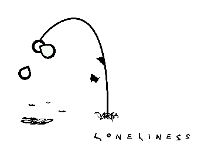

This is a photograph that I took when I was visiting Siesta Keys, FL. This was taken on the beach in 2008. I chose this image because it is one of my favorites and I wanted to incorporate a photograph. This image is in the JPEG format.
This is a photograph that I took when I was visiting Siesta Keys, FL. This was taken on the beach in 2008. I chose this image because it is one of my favorites and I wanted to incorporate a photograph. This image is in the JPEG format.Logo for a concert tracking website. I created this logo in Applied Design Tools and Interfaces class. This image is in the PNG-24 format. I chose this image because I wanted to incorporate a logo into this file.
This is a photograph that I took when I was visiting Siesta Keys, FL. This was taken on the beach in 2008. I chose this image because it is one of my favorites and I wanted to incorporate a photograph. This image is in the JPEG format.
 This is an identity mark that I created in my DCG class. I chose this image because I wanted to incorporate an illustration. This image is in the GIF format.